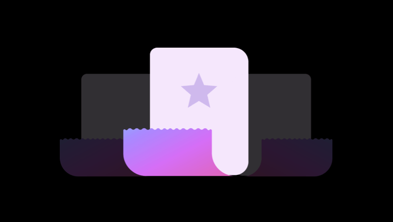

Making your UX Copies accessible and humane
Choose from multiple voice tones, search from wide categories and save your favourites.
Let’s get to the point, Your UX Copies looks like this
We are here to change this, Run the plugin to see for yourself
Run Ghost UXWriterChoose UX Copies across multiple categories
Some description of the feature here to convey the idea in more detail, we can talk about how this feature helps them choose copies faster.

Select the voice and tone that suits your project
The coolest thing is that every little UX copy has three different tones. Which means you have a variety of options to choose from! It's like choosing the right that matches your brand personality!
Pick your favorites
Now, you can mark copies as favorites for smooth access and add your personal copies to keep using them frequently within the project.
